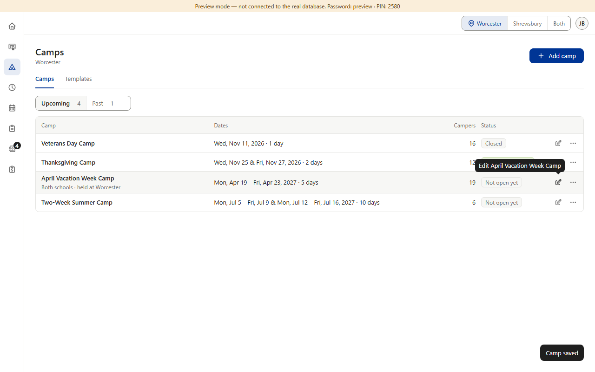
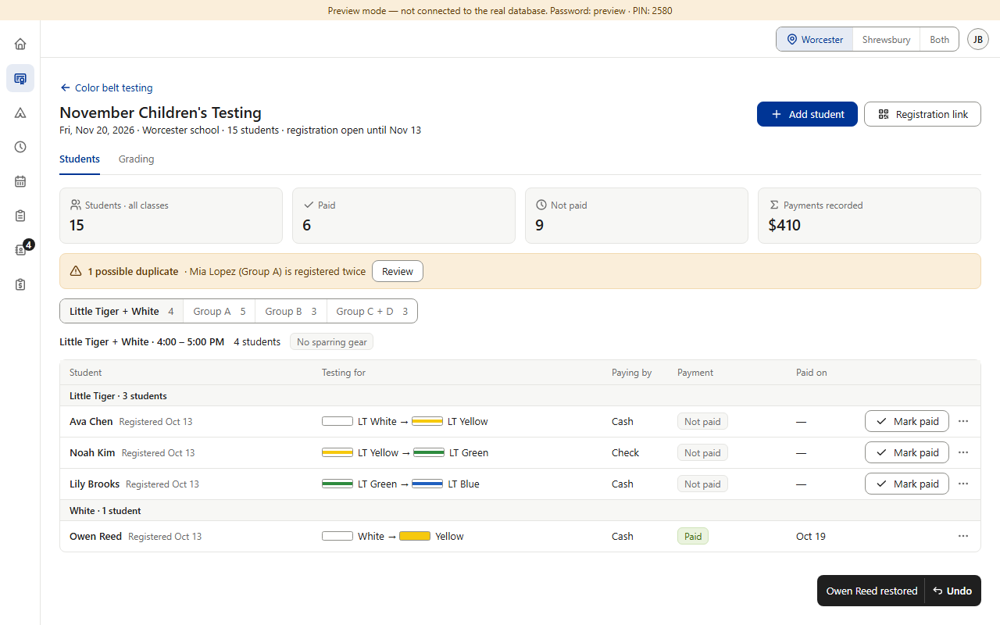
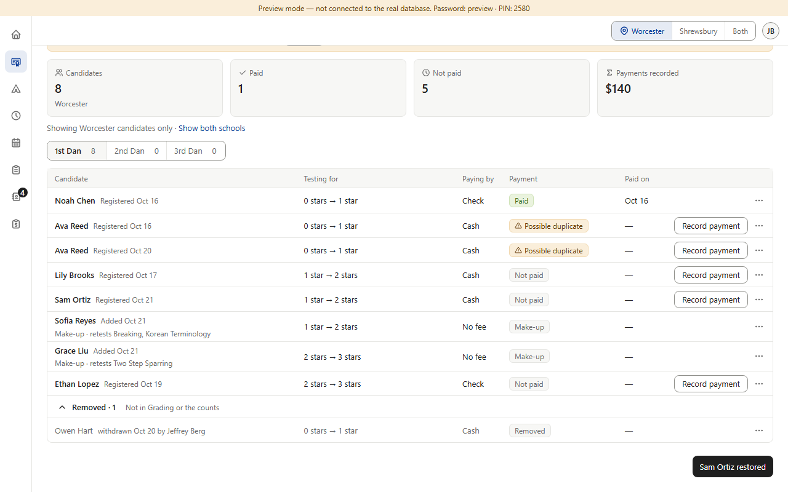
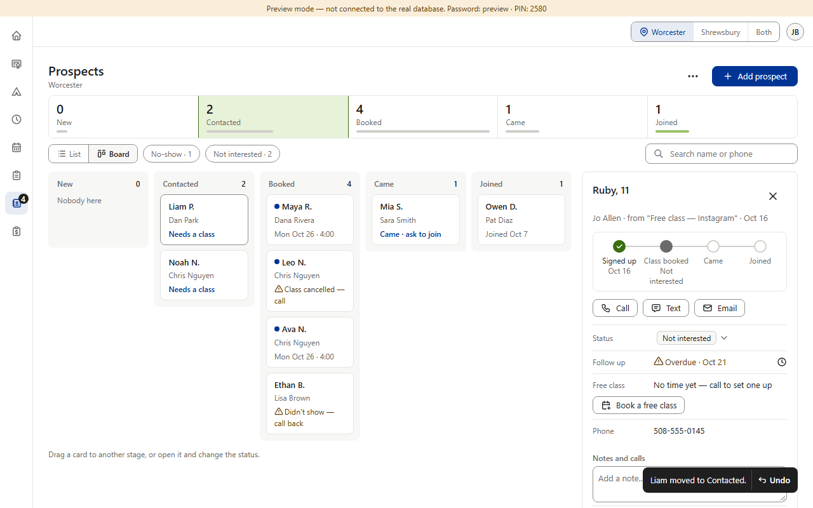
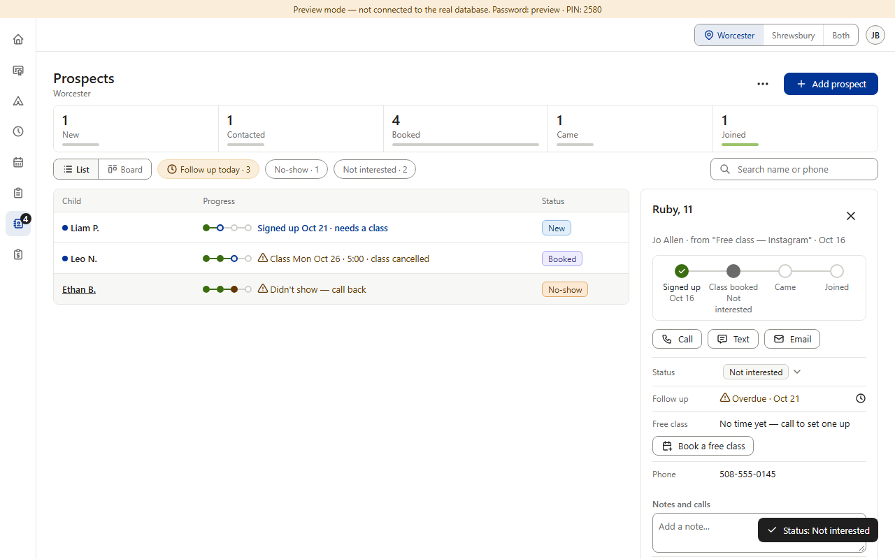
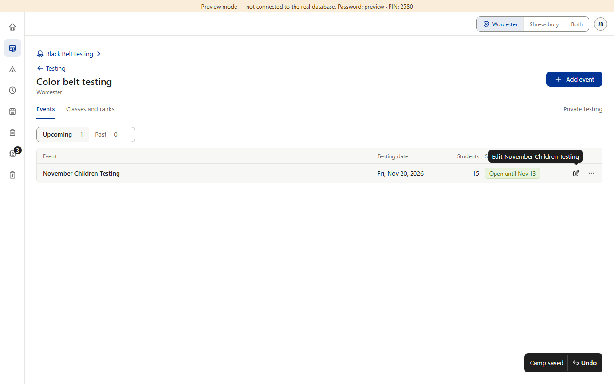

Mostly drift. Rule 1.4: a change that can be reversed happens at once and its toast offers Undo for 5 seconds. Color Belt, Schedule and Calendar do this. Camps' saves, Restore in Star / Black Belt / Color Belt private testing, Star's “Change how they'll pay”, Prospects' status from the panel and Forms' Close / Open don't — nobody decided that. Approved without Undo: Black Belt's Edit details and cycle saves (drawn that way), and Finance's “Day reopened” (you can close it again). (Preview screenshots · fake data · each pair is the same kind of change)





